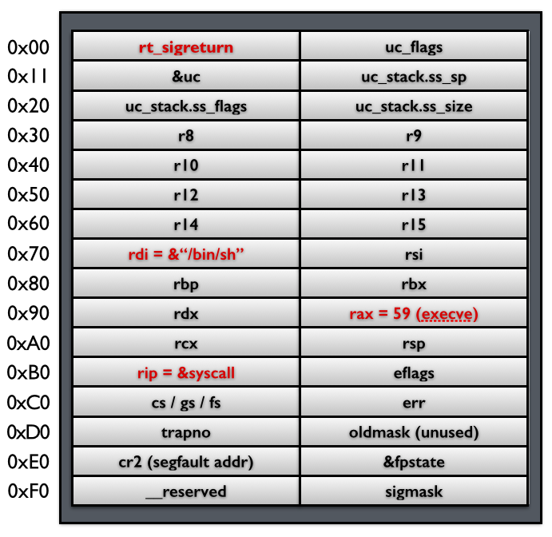

SROP¶
简介¶
SROP 的全称是 Sigreturn Oriented Programming 。这里sigreturn是一个系统调用，它在 unix 系统发生 signal 的时候会被间接地调用。
signal 机制¶
简单来说就类 unix 系统中的一种中断信号机制，类似于单片机的各类中断服务信号，该机制常见步骤如下：

当内核向某个进程发起（ deliver ）一个 signal ，该进程会被暂时挂起（ suspend ），进入内核（1），然后内核为该进程保存相应的上下文，主要是将所有寄存器压入栈中，以及压入 signal 信息，以及指向 sigreturn 的系统调用地址。跳转到之前注册好的 signal handler 中处理相应signal（2），当 signal handler 返回之后（3），内核为该进程恢复之前保存的上下文，最后恢复进程的执行（4）。
Signal Frame 结构¶
在第二步中被压入栈中，存储进程上下文的数据被称为 Signal Frame ，存放在用户进程的地址空间（栈）。下图中的绿、黄、橙色组成 Signal Frame 。

中断后执行的 signal handler 使用的栈空间在上图的 sp 下方（低地址）
对于 signal Frame 来说，会因为架构的不同而有所区别，这里给出分别给出 x86 以及 x64 的 sigcontext ：
- x86
struct sigcontext
{
unsigned short gs, __gsh;
unsigned short fs, __fsh;
unsigned short es, __esh;
unsigned short ds, __dsh;
unsigned long edi;
unsigned long esi;
unsigned long ebp;
unsigned long esp;
unsigned long ebx;
unsigned long edx;
unsigned long ecx;
unsigned long eax;
unsigned long trapno;
unsigned long err;
unsigned long eip;
unsigned short cs, __csh;
unsigned long eflags;
unsigned long esp_at_signal;
unsigned short ss, __ssh;
struct _fpstate * fpstate;
unsigned long oldmask;
unsigned long cr2;
};
- x64（64 位有图，见后文）
struct _fpstate
{
/* FPU environment matching the 64-bit FXSAVE layout. */
__uint16_t cwd;
__uint16_t swd;
__uint16_t ftw;
__uint16_t fop;
__uint64_t rip;
__uint64_t rdp;
__uint32_t mxcsr;
__uint32_t mxcr_mask;
struct _fpxreg _st[8];
struct _xmmreg _xmm[16];
__uint32_t padding[24];
};
struct sigcontext
{
__uint64_t r8;
__uint64_t r9;
__uint64_t r10;
__uint64_t r11;
__uint64_t r12;
__uint64_t r13;
__uint64_t r14;
__uint64_t r15;
__uint64_t rdi;
__uint64_t rsi;
__uint64_t rbp;
__uint64_t rbx;
__uint64_t rdx;
__uint64_t rax;
__uint64_t rcx;
__uint64_t rsp;
__uint64_t rip;
__uint64_t eflags;
unsigned short cs;
unsigned short gs;
unsigned short fs;
unsigned short __pad0;
__uint64_t err;
__uint64_t trapno;
__uint64_t oldmask;
__uint64_t cr2;
__extension__ union
{
struct _fpstate * fpstate;
__uint64_t __fpstate_word;
};
__uint64_t __reserved1 [8];
};
rt_sigreturn 恢复线程步骤¶
假设是 64 位系统，在第一个步时将如下的 Signal Frame 压入了栈上，接着跳转执行注册好的signal handler ，当 signal handler 执行完之后，栈指针（stack pointer）就指向rt_sigreturn，所以，signal handler 函数的最后一条ret指令会使得执行流跳转到这段sigreturn代码，被动地进行sigreturn系统调用，恢复进程上下文。

Signal Frame 缺陷¶
- 这一部分 Signal Frame 是存储在用户进程的地址空间，用户进程具有读写权限。
- 内核恢复进程时，没有对 Signal Frame 进行前后对比，即可能恢复的进程与保持不一样。
简单单次利用¶
控制用户进程的栈，那么它就可以伪造一个 Signal Frame，如下图所示，这里以 64 位为例子，给出 Signal Frame 更加详细的信息：

当系统执行完 sigreturn 系统调用之后，会执行一系列的 pop 指令以便于恢复相应寄存器的值，当执行到 rip 时，就会将程序执行流指向 syscall 地址，根据相应寄存器的值，此时，便会得到一个 shell 。
system call chains¶
如果需要执行一系列的函数，我们只需要做两处修改即可：
- 控制栈指针。
- 把原来 rip 指向的
syscallgadget 换成syscall; retgadget。
如下图所示 ，这样当每次 syscall 返回的时候，栈指针都会指向下一个 Signal Frame。因此就可以执行一系列的 sigreturn 函数调用。

两个 gadget 在哪¶
在某些 libc 中会存在，具体看参考文章，ctf 会在程序中预留。
sigreturn 这个 gadget 话可以用系统调用号代替。在 64 位系统中，sigreturn 系统调用对应的系统调用号为 15，只需要 RAX=15，并且执行 syscall 即可实现调用 syscall 调用。而 RAX 寄存器的值又可以通过控制某个函数的返回值来间接控制，比如说 read 函数的返回值为读取的字节数。
利用工具¶
pwntools 中已经集成了对于 srop 的攻击，用 SigreturnFrame 生成 Signal Frame 。
例题¶
360 春秋杯 smallest-pwn¶
system call chains 利用，多次调用 sigreturn
[V&N2020 公开赛]babybabypwn¶
system call chains 简单利用，控制恢复进程上下文后跳转执行写入的利用链